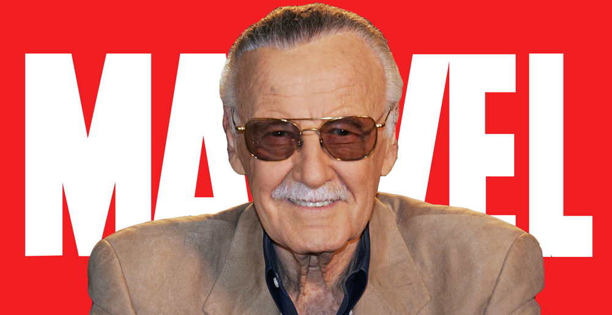
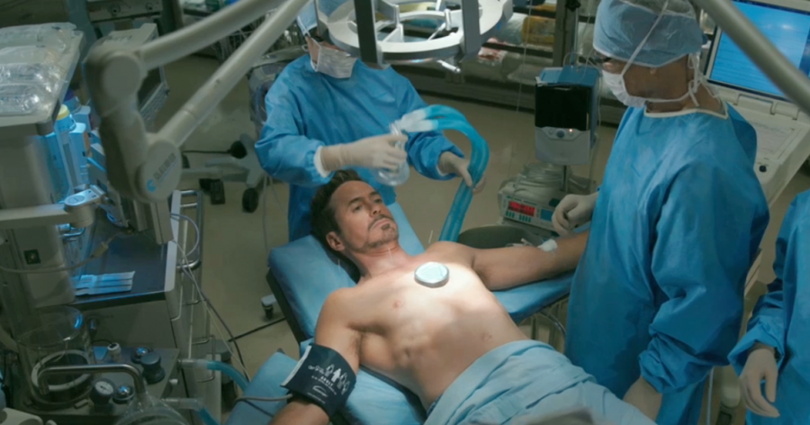
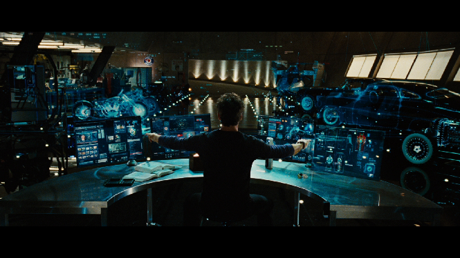
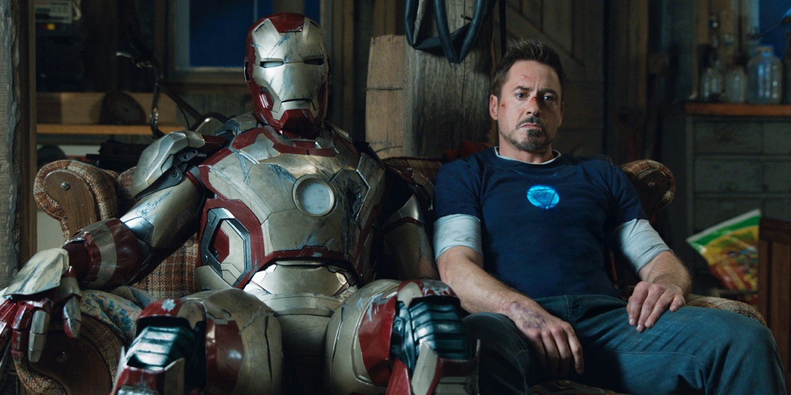
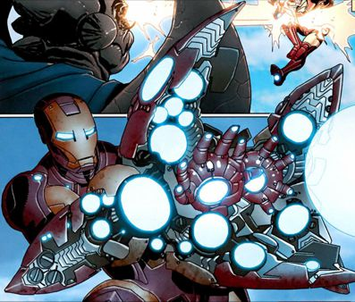

Premiere

Iron Man's Marvel Comics premiere in Tales of Suspense #39 (cover dated March 1963) was a collaboration among editor and
story-plotter Stan Lee, scripter Larry Lieber, story-artist Don Heck, and cover-artist and character-designer Jack Kirby.
In 1963, Lee had been toying with the idea of a businessman superhero. He wanted to create the "quintessential capitalist",
a character that would go against the spirit of the times and Marvel's readership. He set out to make the new character a
wealthy, glamorous ladies' man, but one with a secret that would plague and torment him as well.
Writer Gerry Conway said, "Here you have this character, who on the outside is invulnerable, I mean, just can't
be touched, but inside is a wounded figure. Stan made it very much an in-your-face wound, you know, his heart was broken,
you know, literally broken. But there's a metaphor going on there. And that's, I think, what made that character interesting."
Lee based this playboy's looks and personality on Howard Hughes, explaining, "Howard Hughes was one of the most colorful men
of our time. He was an inventor, an adventurer, a multi-billionaire, a ladies' man and finally a nutcase." "Without being crazy,
he was Howard Hughes," Lee said.
In his premiere, Iron Man was an anti-communist hero, defeating various Vietnamese agents. Lee later regretted this early
focus.[5][15] Throughout the character’s comic book series, technological advancement and national defense were constant
themes for Iron Man, but later issues developed Stark into a more complex and vulnerable character as they depicted his
battle with alcoholism (as in the "Demon in a Bottle" storyline) and other personal difficulties.
After issue #99 (March 1968), the Tales of Suspense series was renamed Captain America. An Iron Man story appeared in the
one-shot comic Iron Man and Sub-Mariner (April 1968), before the "Golden Avenger"[21] made his solo debut with The Invincible
Iron Man #1 (May 1968).[22] The series' indicia gives its copyright title Iron Man, while the trademarked cover logo of most
issues is The Invincible Iron Man. Artist George Tuska began a decade long association with the character with Iron Man #5
(Sept. 1968).[23] Writer Mike Friedrich and artist Jim Starlin's brief collaboration on the Iron Man series introduced Mentor,
Starfox, and Thanos in issue #55 (Feb. 1973).[24] Friedrich scripted a metafictional story in which Iron Man visited the San
Diego Comic Convention and met several Marvel Comics writers and artists.[25] He then wrote the multi-issue "War of the
Super-Villains" storyline which ran through 1975.
Powers and Abilities

After being critically injured during a battle with the Extremis-enhanced Mallen, Stark injects his nervous system with modified
techno-organic virus-like body restructuring machines (the Extremis process).[122] By rewriting his own biology, Stark is able
to save his life, gain an enhanced healing factor, and partially merge with the Iron Man armor, superseding the need for bulky,
AI-controlled armors in favor of lighter designs, technopathically controlled by his own brain. His enhanced technopathy extends
to every piece of technology, limitless and effortlessly due to his ability to interface with communication satellites and wireless
connections to increase his "range". Some components of the armor-sheath are now stored in Tony's body, able to be recalled, and
extruded from his own skin, at will.
After being forced to "wipe out" his brain to prevent Norman Osborn from gaining his information, Tony Stark is forced to have a
new arc reactor, of Rand design installed in his chest. The process greatly improves his strength, stamina and intellect. The
procedure left him with virtually no autonomic functions: as his brain was stripped of every biological function, Tony is forced
to rely on a digital backup of his memories (leaving him with severe gaps and lapses in his long-term memory) and on software routine
in the arc reactor for basic stimuli reaction, such as blinking and breathing. The Bleeding Edge package of armor and
physical enhancement is now equal in power, if not a more advanced, version of the old Extremis tech.

Tony Stark is an inventive genius whose expertise in the fields of mathematics, physics, chemistry, and computer science rivals
that of Reed Richards, Hank Pym, and Bruce Banner, and his expertise in electrical engineering and mechanical engineering surpasses
even theirs. He is regarded as one of the most intelligent characters in the Marvel Universe. He graduated with advanced degrees in
physics and engineering at the age of 17 from Massachusetts Institute of Technology (MIT) and further developed his knowledge
ranging from artificial intelligence to quantum mechanics as time progressed. His expertise extends to his ingenuity in dealing with
difficult situations, such as difficult foes and deathtraps, in which he is capable of using available tools, including his suit, in
unorthodox but effective ways. He is well respected in the business world, able to command people's attention when he speaks on economic
matters, having over the years built up several multimillion-dollar companies from virtually nothing. He is noted for the loyalty he
commands from and returns to those who work for him, as well as for his business ethics. Thus he immediately fired an employee who made
profitable, but illegal, sales to Doctor Doom. He strives to be environmentally responsible in his businesses.
Weapons and Equipment
Iron Man possesses powered armor that gives
him superhuman strength and durability, flight, and an array of weapons. The armor is invented and worn by Stark (with occasional
short-term exceptions). Other people who have assumed the Iron Man identity include Stark's long-time partner and best friend
James Rhodes; close associates Harold "Happy" Hogan; Eddie March; and (briefly) Michael O'Brien.The weapons systems of the suit
have changed over the years, but Iron Man's standard offensive weapons have always been the repulsor rays that are fired from the
palms of his gauntlets. Other weapons built into various incarnations of the armor include: the uni-beam projector in its chest;
pulse bolts (that pick up kinetic energy along the way; so the farther they travel, the harder they hit); an electromagnetic pulse
generator; and a defensive energy shield that can be extended up to 360 degrees. Other capabilities include: generating ultra-freon(
i.e., a freeze-beam); creating and manipulating magnetic fields; emitting sonic blasts; and projecting 3-dimensional holograms (to
create decoys).
In addition to the general-purpose model he wears, Stark has developed several specialized suits for space travel, deep-sea diving,
stealth, and other special purposes. Stark has modified suits, like the Hulkbuster heavy armor. The Hulkbuster armor is composed
of add-ons to his so-called modular armor, designed to enhance its strength and durability enough to engage the Incredible Hulk in a
fight. A later model, designed for use against Thor, is modeled on the Destroyer and uses a mystical power source. Stark develops an
electronics pack during the Armor Wars that, when attached to armors that use Stark technologies, will burn out those components, rendering
the suit useless. This pack is ineffective on later models. While it is typically associated with James Rhodes, the War Machine armor began
as one of Stark's specialty armors.